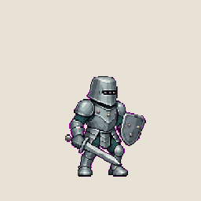
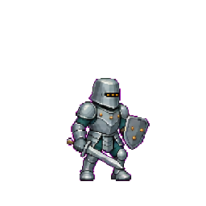
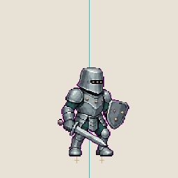
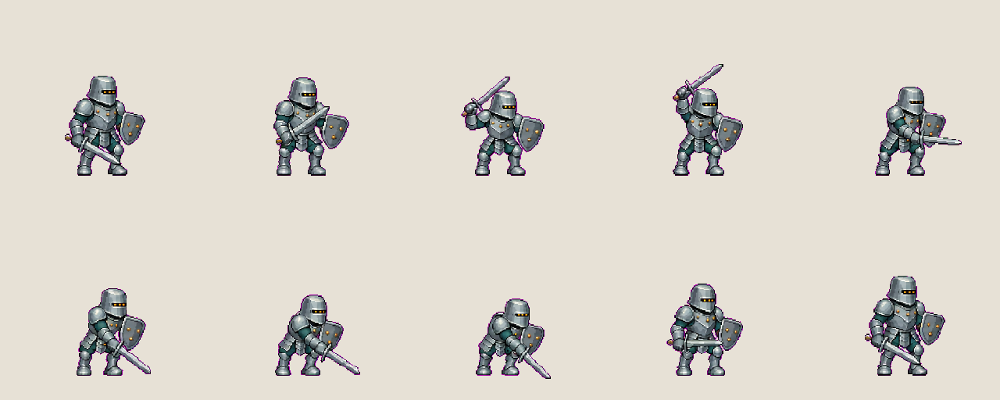

当前展示 ACT01「右上至右下斜劈」V1.2。角色定妆与动作脚本已通过；本版动画仍待用户审核，其余四个动作尚未生成。
斜劈 · GIF 预览

准备、蓄力、胸前过渡、劈砍、缓冲、回收。保留每个中间姿势，不添加剑光或运动模糊。
逐帧检查

固定脚点 · 让动作留在原地

以第一帧左右脚各自的位置为参照，约束后续帧。青线标记中心，橙色标记左右脚点。
1.75 px左脚最大测量偏差
1.54 px右脚最大测量偏差
810 ms10 帧循环时长
10 帧总览
